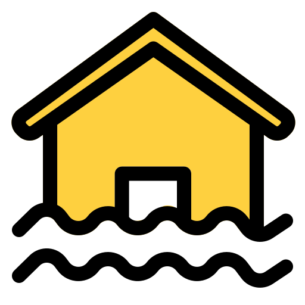

Cari
Control Panel
Layer Data
Area Riau (Polygon)
Area Pekanbaru
Titik Banjir
 Titik Genangan
Filter Area Pekanbaru per Kecamatan
Filter Titik Genangan per Kecamatan
Tipe Peta
OpenStreetMap (Standar)
Satelit (Esri World)
Dark Mode (CartoDB)
Info Kursor
Arahkan kursor ke peta...